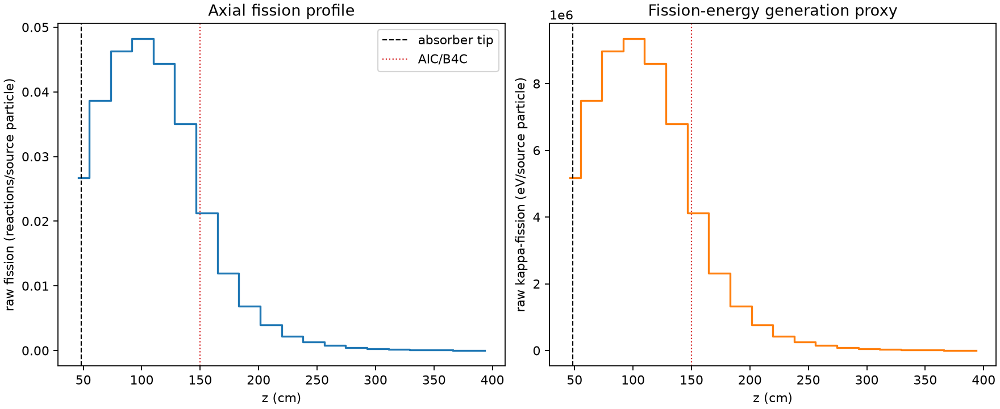
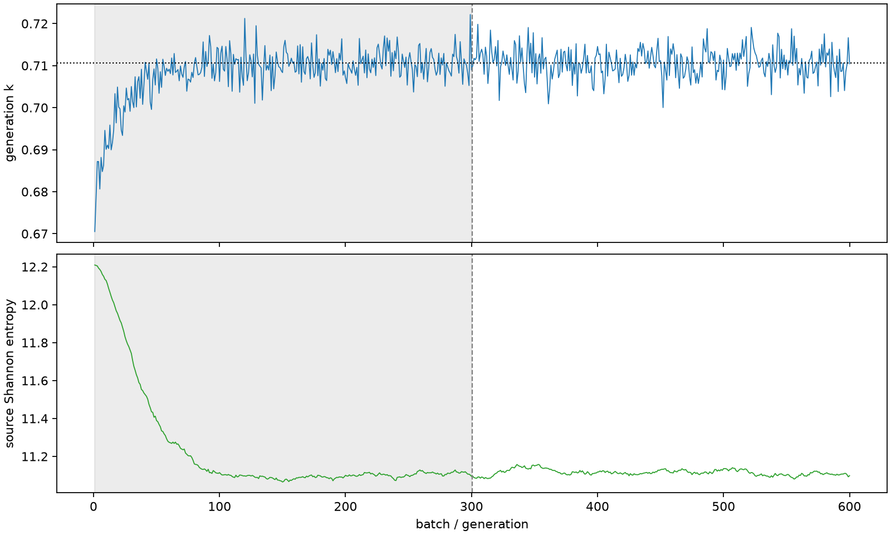

| field | value |
|---|---|
| experiment | V2-STAGE_128_OGRENCI_04-0010 |
| k | 0.7106224837816986 |
| MC standard error | 0.00016152323844150954 |
| seconds | 944.0339319560007 |
| acceptance | not_assessed |
| convergence | review_required |
Completed is output integrity only; physical and statistical review required. Zero tallies do not prove zero production or zero uncertainty.
| diagnostic | value |
|---|---|
| geometric fuel voxels | 5280 |
| zero fission tally voxels | 0 |
| low signal fuel voxels | 616 |
| low signal fission share | 0.00019050666184177 |
| low signal kappa share | 0.00019054982800951168 |
| important fission share | 0.9500396420757374 |
| previous filter included | 4664 |
| duration estimate s | 1562.5173488400023 |
| actual minus estimate s | -618.4834168840016 |
| fission relative MC error | statistics |
|---|---|
| all_geometric_fuel | {"voxels": 5280, "positive_mean_voxels": 5280, "zero_mean_voxels": 0, "undefined_relative_error_voxels": 0, "median": 0.02610905850007417, "p95": 0.32001771604667134, "maximum": 0.7003587023028305} |
| low_signal | {"voxels": 616, "positive_mean_voxels": 616, "zero_mean_voxels": 0, "undefined_relative_error_voxels": 0, "median": 0.2931424841352697, "p95": 0.5211569892753185, "maximum": 0.7003587023028305} |
| important_95pct | {"voxels": 2166, "positive_mean_voxels": 2166, "zero_mean_voxels": 0, "undefined_relative_error_voxels": 0, "median": 0.0076626526632680315, "p95": 0.01390834063485422, "maximum": 0.019109019313273058} |
| outside_previous_filter | {"voxels": 616, "positive_mean_voxels": 616, "zero_mean_voxels": 0, "undefined_relative_error_voxels": 0, "median": 0.2931424841352697, "p95": 0.5211569892753185, "maximum": 0.7003587023028305} |
| kappa_fission relative MC error | statistics |
|---|---|
| all_geometric_fuel | {"voxels": 5280, "positive_mean_voxels": 5280, "zero_mean_voxels": 0, "undefined_relative_error_voxels": 0, "median": 0.026045820316690366, "p95": 0.31940592653285504, "maximum": 0.6990989378674466} |
| low_signal | {"voxels": 616, "positive_mean_voxels": 616, "zero_mean_voxels": 0, "undefined_relative_error_voxels": 0, "median": 0.2925637016953331, "p95": 0.5198105495124609, "maximum": 0.6990989378674466} |
| important_95pct | {"voxels": 2166, "positive_mean_voxels": 2166, "zero_mean_voxels": 0, "undefined_relative_error_voxels": 0, "median": 0.007648532711699507, "p95": 0.013885339417300236, "maximum": 0.019075234272051} |
| outside_previous_filter | {"voxels": 616, "positive_mean_voxels": 616, "zero_mean_voxels": 0, "undefined_relative_error_voxels": 0, "median": 0.2925637016953331, "p95": 0.5198105495124609, "maximum": 0.6990989378674466} |
| axial bin | fission share | kappa-fission share |
|---|---|---|
| 1 | 0.09255103988629365 | 0.0925376834582123 |
| 2 | 0.13388590168144904 | 0.1338845147181495 |
| 3 | 0.1603144814223061 | 0.16031294296441043 |
| 4 | 0.1669900094517184 | 0.16698856434368836 |
| 5 | 0.1536606818271956 | 0.15365983907715552 |
| 6 | 0.12147045717576996 | 0.12147028749101732 |
| 7 | 0.07364726699935152 | 0.0736537997023811 |
| 8 | 0.04144946989963368 | 0.041454410874717726 |
| 9 | 0.023716055511694704 | 0.023719274558053862 |
| 10 | 0.013596157619600797 | 0.013597845273073278 |
| 11 | 0.007754921334486426 | 0.007755959800836524 |
| 12 | 0.004550471876155241 | 0.004551010734358069 |
| 13 | 0.002720518643016273 | 0.0027208102750374977 |
| 14 | 0.001636538826382015 | 0.0016367162643861311 |
| 15 | 0.0009183579997931742 | 0.0009184743453881695 |
| 16 | 0.0005024085626839238 | 0.0005025194755385478 |
| 17 | 0.00032561123611123507 | 0.0003256285963751037 |
| 18 | 0.0001803806462229978 | 0.0001804134362856509 |
| 19 | 9.762456926603112e-05 | 9.764912368483544e-05 |
| 20 | 3.1644830869022716e-05 | 3.165548725032147e-05 |
Histories include the inactive-to-active transition at batch 300. kappa-fission approximates fission energy production, not total heat deposition.

